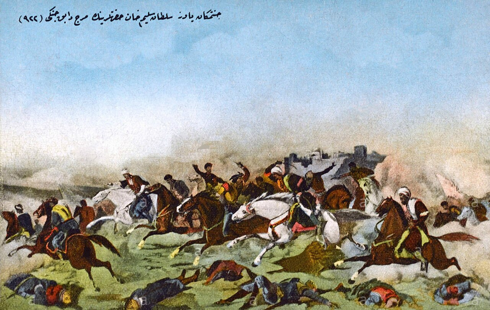
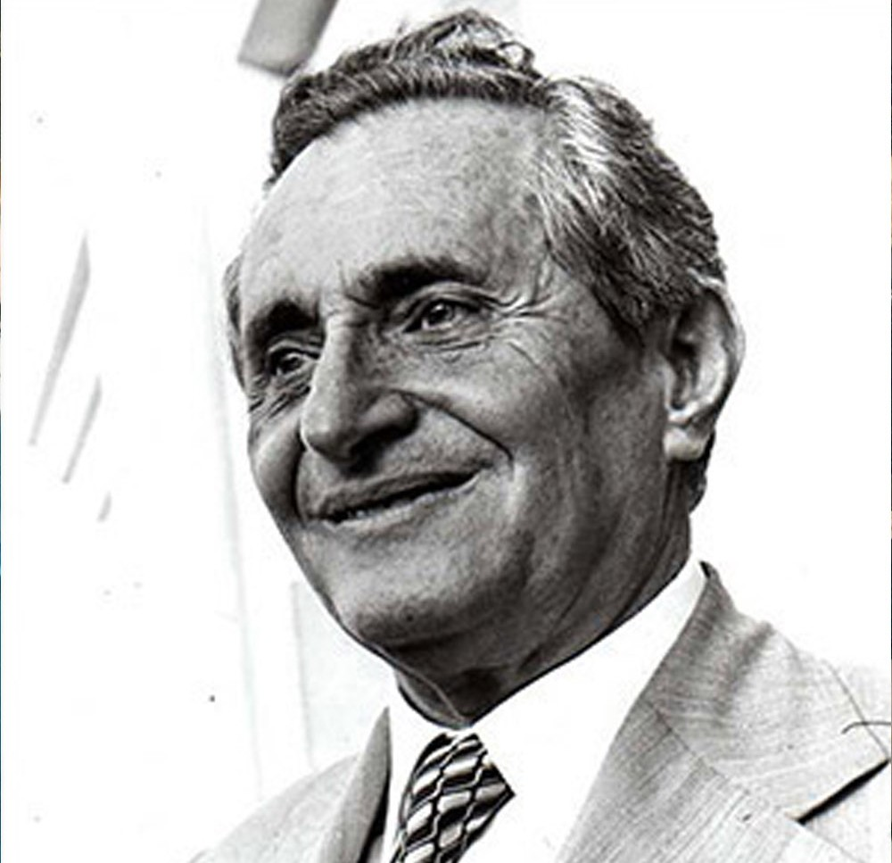
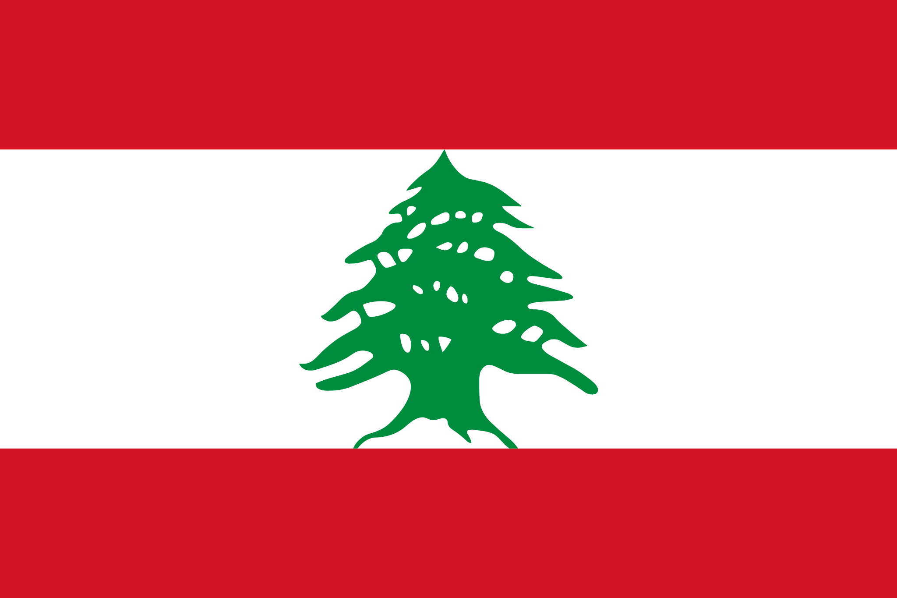

Récit en images
Le drapeau libanais raconte une histoire.
Récit en images
Le drapeau libanais
1 / 8




Carte 1 sur 8
Légende de la publication
Le drapeau libanais ou la quête d’une unité nationale 🇱🇧
Fig 1. Bataille de Marj Dabiq en 1516. Fig. 2 et 3. Reconstitution des drapeaux qaysite et maanite. Fig 4. Maurice Chehab. Fig 5. Premier dessin du drapeau libanais, dessiné et signé par les membres du Parlement libanais lors de la proclamation de l’indépendance en 1943.
(aucune IA utilisée pour ce post !)
À lire ensuite
D’autres récits à explorer.
1 / 2